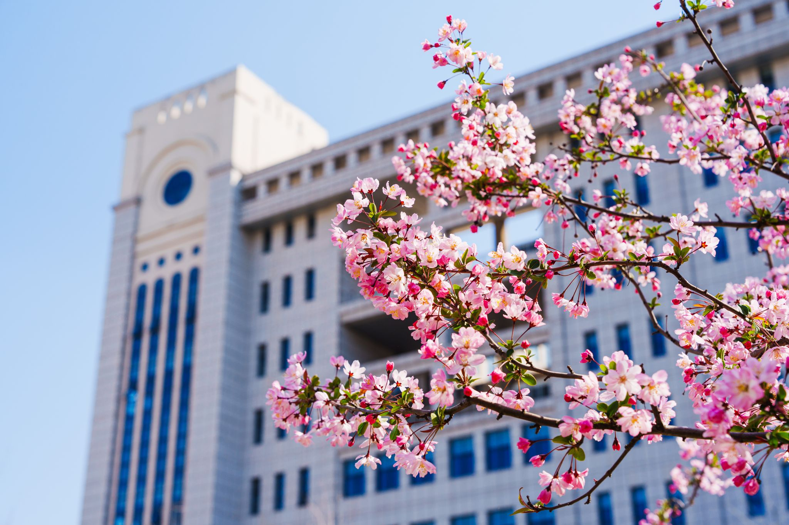
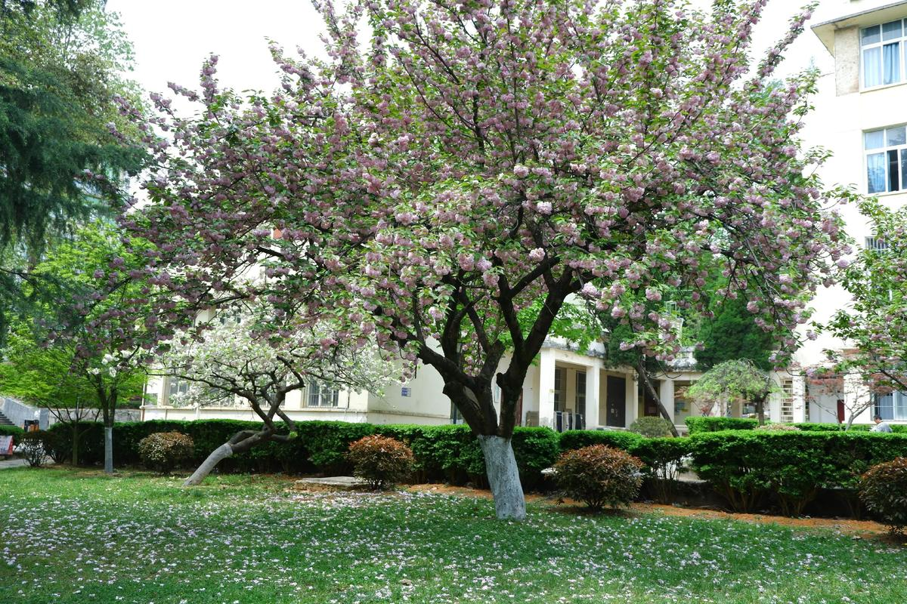
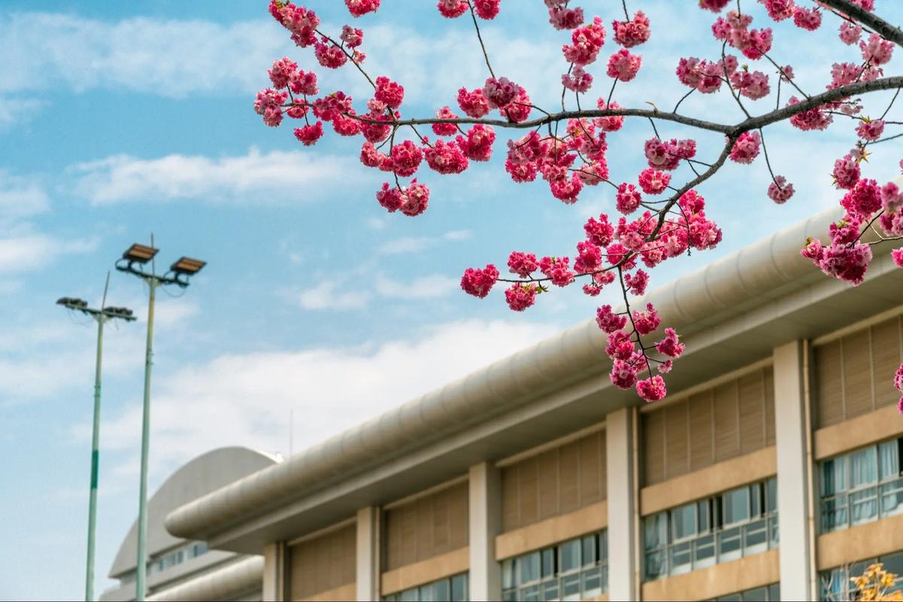

春日的晨光总带着几分温柔，透过叶隙，在青石板路上洒下斑驳的金箔。
行道树早已换上盛装，悬铃木的叶子染成深浅不一的绿色，风过时便簌簌摇动，发出细碎的 “沙沙” 声，像是树冠在轻声呢喃。
沿着山径向上，春色愈发浓烈得令人心醉。
柳树是春日最张扬的画家，将整座山谷晕染成一片翠绿，像是特意勾勒的模样；
鸡爪槭则偏爱热烈的橙黄，远远望去，仿佛燃烧的火焰在枝头跳跃。
偶尔可见几株松柏依然挺立着，形成奇妙的色彩平衡。
山涧的溪流比冬日更显清澈，水底的鹅卵石上附着薄薄的青苔，几片绿叶随波漂流，像是写给远方的信笺。
田埂边的野菊开得正盛，白的、黄的、紫的，星星点点缀在青草间，给大地添了几分俏皮。


